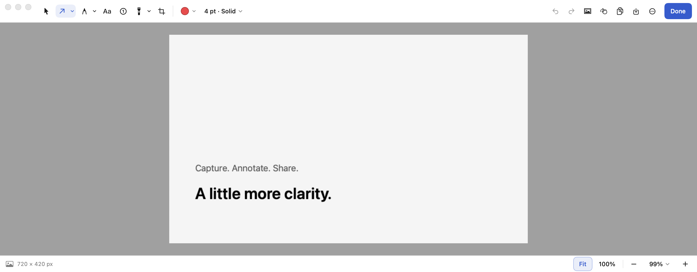
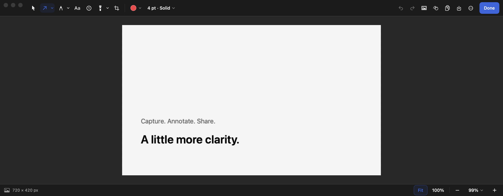
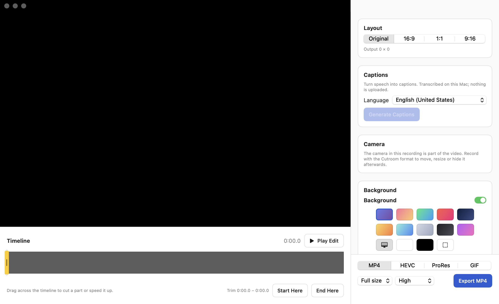
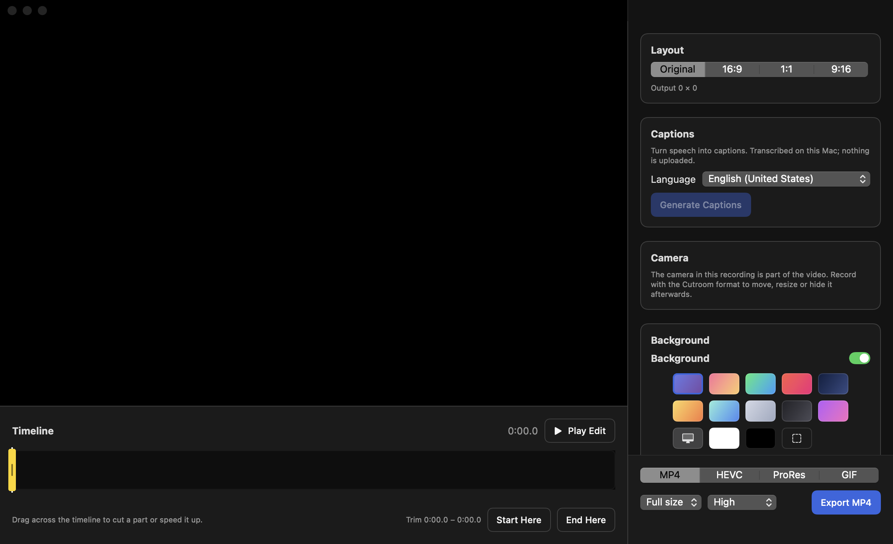
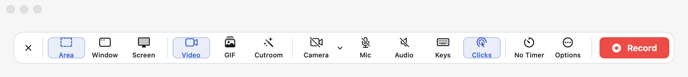
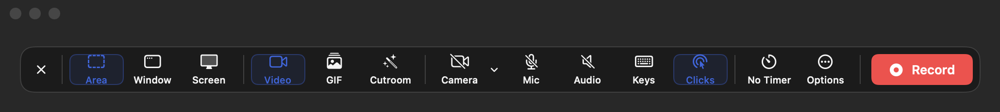
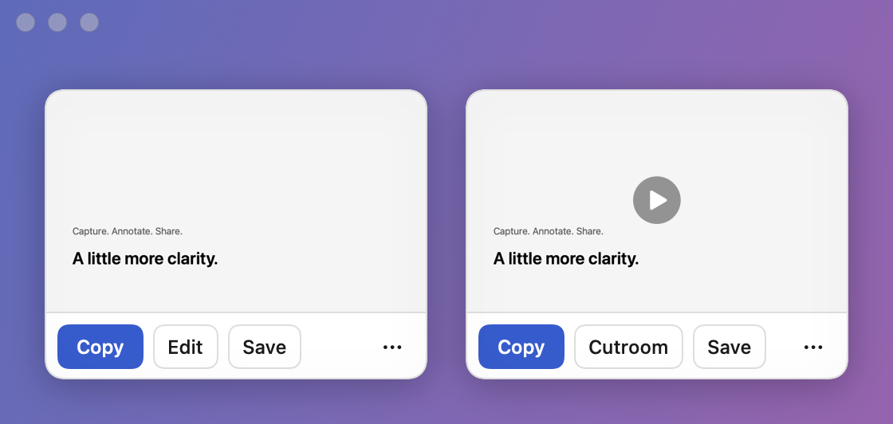
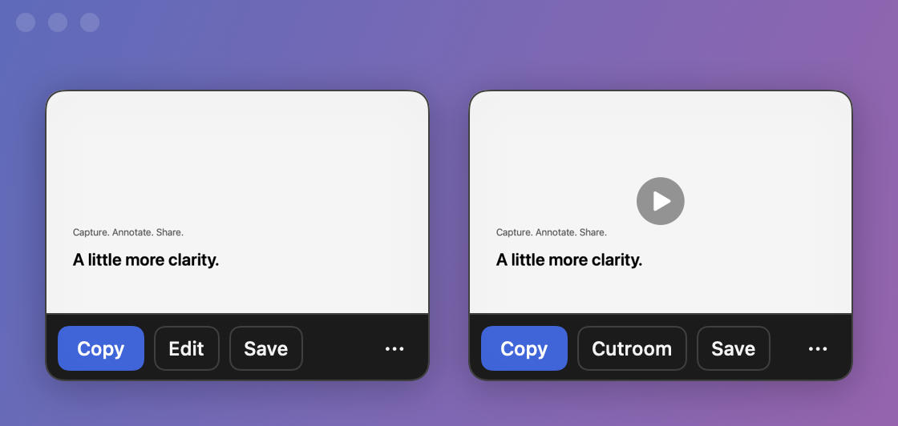
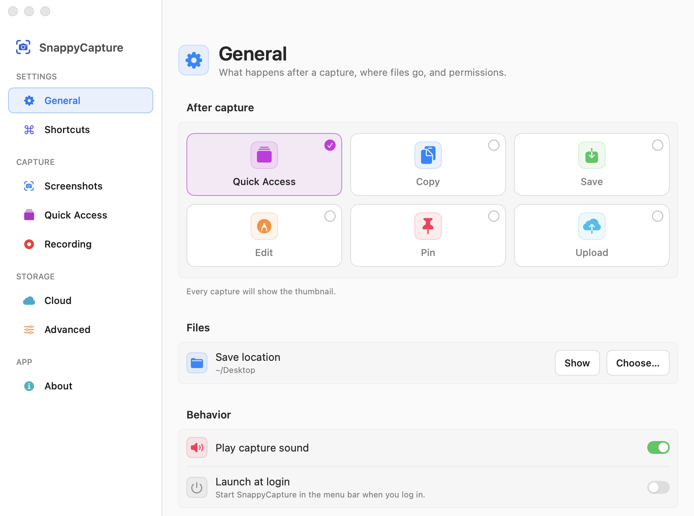
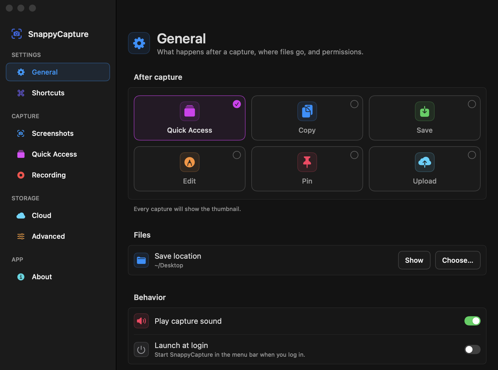

Precision & Scrolling Capture
Freeze-screen crosshair with magnifier, live dimensions, window transparency, and vertical or horizontal scrolling capture that handles sticky headers and sidebars.
SnappyCapture brings area & scrolling screenshots, on-device OCR, smart annotations, and the built-in Cutroom video editor into one lightweight macOS app — completely local by default.










Designed around fast keyboard workflows, native SwiftUI polish, and zero third-party bloat.
Freeze-screen crosshair with magnifier, live dimensions, window transparency, and vertical or horizontal scrolling capture that handles sticky headers and sidebars.
Arrows, shapes, numbered counters, spotlight, blur/pixelate, Snap-to-Text highlighting, wallpaper backgrounds, canvas zoom & pan, and re-editable .sshot projects.
Extract text in 30+ languages or decode QR & barcodes via Apple Vision. Instantly search your entire Capture History by text inside screenshots or video captions.
Floating corner overlay lets you copy, edit, pin, OCR, or drag captures into any app. Pin screenshots above all windows with opacity and click-through lock.
Record H.264, HEVC, ProRes, or GIF with system audio, Apple voice-isolation mic cleanup, webcam bubble with background blur, keystrokes, and Pause/Resume.
No subscription cloud required. Connect your own S3-compatible bucket — Cloudflare R2, AWS S3, Backblaze B2, or MinIO — for instant uploads and custom-domain links.
Record in Cutroom mode to capture screen, cursor path, and webcam as separate tracks — then edit everything nondestructively right inside SnappyCapture.
.srt.
Every capture is one shortcut away — and fully customizable in Settings → Shortcuts or scriptable via snappycapture:// URLs.
Built exclusively on Apple frameworks — ScreenCaptureKit, Vision, AVFoundation, and Core Image — with no third-party dependencies, no accounts, and nothing uploaded unless you connect your own cloud bucket.
Download the disk image, drag SnappyCapture into Applications, grant Screen Recording once, and you're ready to capture.
Your browser should start downloading the macOS disk image automatically. Open it and drag SnappyCapture into Applications.
⌥⇧4 to take your first capture